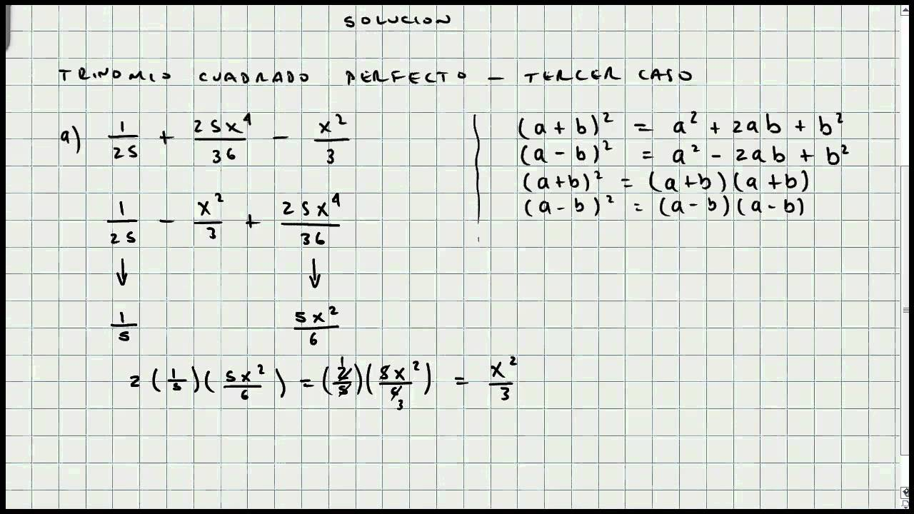
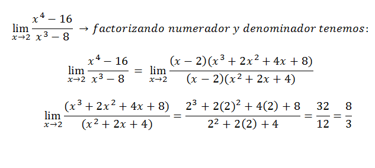

Matematicas Diego Echavarria Misas
La factorización es una técnica que consiste en la
descomposición de una expresión matemática, en forma de
producto. El teorema fundamental del álgebra se puede
establecer como: Todo polinomio de grado n con coeficientes de
número complejo se divide por completo en factores lineales n.
Ejemplos de ejercicios resueltos

